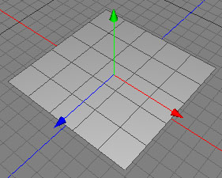
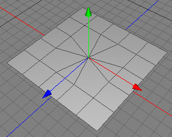

一点に収束ツール
一点に収束ツールは、ポリゴンを削除するために使われます。
 
真ん中の４角ポリゴンは（削除され、周囲のポリゴンは）その中心ポイントに整理されました。
編集モード
一点に収束ツールは、ローポリゴンオブジェクトにのみ使用できます。これは、ポイントモード、エッジモード、ポリゴンモードで使用可能です。


一点に収束ツールを使用するには、ローポリゴンオブジェクトのポリゴンの１つをクリックします。ポリゴンは削除され、そのすべての角は、削除されたポリゴンの中心かマウスでクリックした位置の１つのポイントに接続されます。
エッジを整理（削除）したい場合には、ポイントを接合ツールを使用してください。
補助キー
-
- なし
プロパティ
-
収束位置: ポリゴンの辺がたたまれる位置を設定します。
- クリック点: ポリゴンの辺は、マウスクリックの位置にたたまれます。
- 中心点: ポリゴンの辺は、そのポリゴンの中心点にたたまれます。